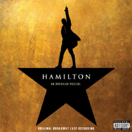
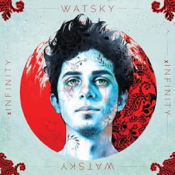
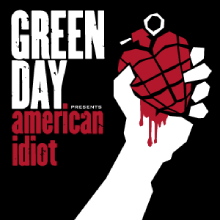
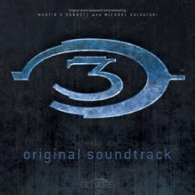
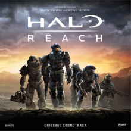
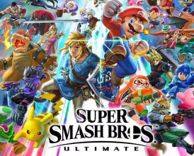
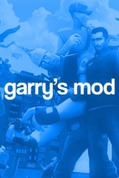
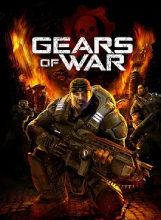

Interesting things about me, Michael:
My Favorite Music Albums/Soundtracks
- Hamilton 
- xInfinity 
- American Idiot 
- Undertale

- My Head is an Animal

My Favorite Video Games
- Halo 3 
- Halo Reach 
- Super Smash Bros 
- Gary's Mod 
- Gears of War 
Three Fun Facts
- I'm very invested in Musical Theatre
My all time favorite has been Hamilton since I was 16. Musical Theatre was my teenage blossoming, watered by the fruits of my efforts in Choir and a capella. Before this I was in a sort of loveless relationship with American Football as a hobby, I was good at it, but I ran out of anger. All I had left to give was love and curiousity, so I returned to my childhood love of music when I entered highschool.
- Video games have always had a salient presence in my life
Growing up I'd play games like Golden Eye 007 and GTA: San Andreas while I visited my dad most Sunday's. Video games were salient, but so were normal board games, as a kid I had a therapist named Dr.Bob who would play all sorts of board games with me that were designed to broaden my social understanding by using open-ended questions. It is weird acknowledging it here, but I think that is why I was able to end up so emotionally well off despite my daily stressors. That being said, he might have been like another father for me, since my dad could never let himself play video games with me, for what reason I don't know why. Nowadays I spend less time playing multiplayer games, I like to experience stories through this interactive medium, if someone has a story to tell, a vision they want to share, I am all for taking a gander.
- I have a hard time turning my brain off, my sense of awareness tends to be so strong it keeps me awake at night
I've always found myself paying attention to what's going on around me. I'm not sure whether it is a lack of trust or a steadfast vigilance, but whether I like it or not it helps me function most days and I'm grateful to be present everyday.